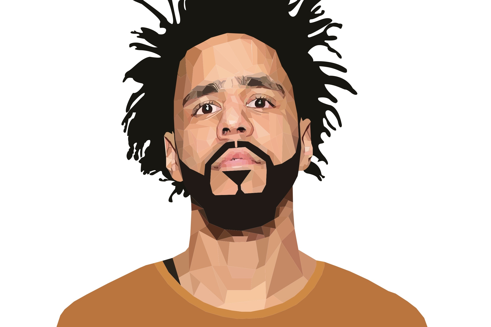

Portrait Design
These two portraits were created for my digital imaging class at Stonehill College. The two portraits are made in different ways. The first portrait is of J Cole and is made by creating small triangular figures around his face. The second portrait is of Prince, and this one was created by taking different levels of color in his face and layering them together to create debth.